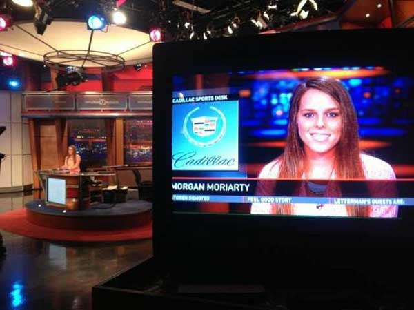

About Morgan
Experienced sports broadcaster, writer, and reporter
Morgan Moriarty is a third year Media and Society Telecommunications major at the University of Florida.
Morgan has a variety of skillsets and abilities. She has been a Gator sports blogger for Our Two Bits for over a year, and is a current Gator Football beat reporter for Florida Sports Talk Radio.
After graduation, Morgan is hoping to build a career as a sports journalist. She enjoys writing about sports, but eventually wants to work in TV on-air .

A Variety of Expertise
Morgan has experience across the board. She is a seasoned sports writer with football, baseball, basketball, and Olympic Games.
She has worked at two different radio stations, providing on-air and online content for both.
She has interned at WUSA9 TV in Washington, D.C. where she assisted in a variety of areas including production, filming, reporting, and writing stories for the station's website. She reported on Washington Redskins and Baltimore Ravens Training Camp, The 2013 AT&T National, and much more